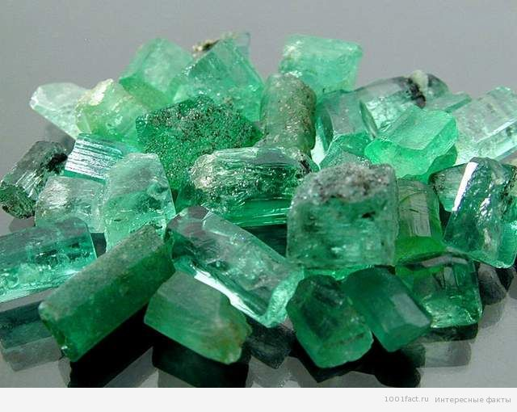

| Главная | Сапфир | Рубин | Алмаз |

Еще с древних времен изумруд ценился очень высоко и считался королевским камнем. Украшения с изумрудом можно встретить на многих портретах представителей королевских домов и высшей аристократии, выставляемых в музеях. В большинстве своем на картинах изображены украшения с колумбийскими изумрудами, которые и сейчас считаются самыми лучшими.
Крупные изумруды (свыше 5 карат) хорошего качества ценятся выше бриллиантов, так как камни с такими характеристиками встречаются крайне редко. Для изумрудов считается нормой наличие небольших трещин и дефектов. В связи с этим многие камни (по некоторым данным до 90%) облагораживаются: трещины пропитываются маслом, воском или специальными синтетическими составами. Данные составы используются не только для придания лучшего внешнего вида, но и защищают камень от растрескивания. При соприкосновении с водой (особенно с добавлением чистящих средств) данная пропитка может вымываться. Не забывайте, что за украшениями с изумрудами нужен особый уход, носить их нужно очень аккуратно, избегая ударов, нагревания и соприкосновения с агрессивными химическими веществами (в том числе с любыми бытовыми чистящими средствами, порошком, мылом и т.п.) .
У изумрудов, так же как и у бриллиантов, есть свои характеристики, которые влияют на стоимость:
Все эти данные можно найти на бирке изделия. Вес камня указывается в каратах. Цвет изумрудов варьируется в числовых значениях от 1 до 5, где 1 соответствует насыщенный тёмно-зелёный цвет, а 5 – светло-зелёный цвет. Чем более насыщенный цвет имеет камень, тем он ценится выше. Для огранки чаще всего используется стандартная ступенчатая изумрудная огранка. Данный тип огранки позволяет не только раскрыть красоту камня, но и сохранить его целостность (изумруд очень хрупкий камень), а скошенные углы предотвращают неминуемые сколы острых углов. Также используется самый распространенный в старину вид огранки – кабошон. Зачастую так гранят непрозрачные камни с достаточно сильными видимыми дефектами. Чистота изумрудов определяется в соответствии со степенью прозрачности камня и количеством видимых невооружённым глазом дефектов. При этом для ограненных камней числовые значения чистоты колеблются от 1 до 3 (чем меньше показатель, тем лучше качество), а для кабошонов существует всего 2 группы чистоты. На бирке первое число означает цвет, второе – чистоту. К примеру, 2/3 означает, что изумруд имеет достаточно хороший цвет, но есть дефекты, видимые невооружённым глазом. Если на бирке не указываются данные значения, то этот изумруд деклассированный, т.е. это настоящий изумруд, но низкого качества. Обычно такие камни вставляются в недорогие украшения из серебра.
Не смотря на то, что Колумбия является самым известным источником темно-зеленых изумрудов, залежи имеются во многих странах мира. В последние десятилетия изумрудное производство увеличилось в результате недавно обнаруженных месторождений в Южной Америке, Африке и по всей Европе. Сегодня Колумбия, Бразилия и Замбия ведущие производители изумрудов. Бразильские изумруды ценят за превосходную ясность и желтовато-зеленый цвет, в то время как замбийские камни отличаются синевато-зеленым цветом, который подобен цвету колумбийских.
Изумруд у большинства людей ассоциируется с Колумбией. У камней, добытых в Колумбии качество наиболее высокое, что и привлекает внимание потребителей. Бразилия — также важный кладезь минералов, главным образом там находятся залежи среднего сорта.
Республика Замбия расположена в южной Африке в богатом драгоценными камнями регионе. Многие ее соседи, такие как Мозамбик, Танзания и Намибия имеют крупные месторождения драгоценных камней. Замбия, ранее известна как Северная Родезия, получила свою независимость от Великобритании в 1964. Замбия немного больше, чем Техас и имеет население приблизительно 12 миллионов человек. Экономика ее традиционно зависела от горной промышленности, но страна пыталась разносторонне развиться, продвигая сельское хозяйство, туризм, горную промышленность по добыче драгоценного камня и гидроэлектроэнергетику. Однако по сей день, она остается одной из самых бедных стран в мире.
| Главная | Сапфир | Рубин | Алмаз |